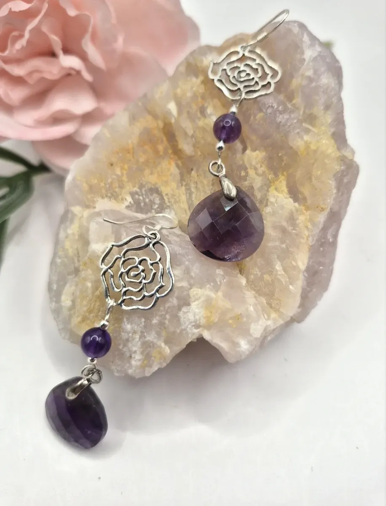

Piedras con
intención
Gemoterapia, belleza que sana. Cada piedra tiene un significado. Conócelo y elige la que te acompañe.
Dime qué te está pasando
…y te digo qué mineral elegir. Si te identificas con alguna, María Angélica puede crear una pieza con esas piedras.
Para cada energía que necesitas
Cinco combinaciones
Significado de los minerales
Conecta con su energía y descubre lo que pueden aportar a tu vida.
Significados tradicionales de la gemoterapia, compartidos por María Angélica como orientación para elegir tus piezas.
Lleva contigo la energía de la naturaleza
Elige tus piedras y te creo una pieza a tu medida, o busca en el catálogo las que ya están hechas.